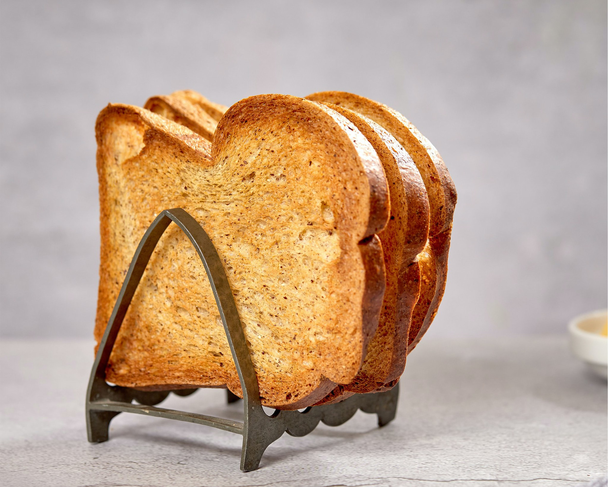

Toast

Description
This recipe for perfectly toasted Toast
is the best thing since, well, sliced bread.
Butter optional, but highly recommended.
Ingredients
Steps
- Preheat the oven to 375 degrees. Trim the crusts off four thin slices of loaf bread. Leave the slices whole or cut each slice (to serve as a base for certain savories such as angels on horseback, deviled chicken livers and so on) into uniform rectangles.
- Melt one tablespoon of butter and butter the bread on both sides. Arrange the bread pieces on a baking sheet and place in the oven. Bake six minutes or until lightly browned on the bottom. Turn the pieces and continue baking one or two minutes longer until browned on the second side.